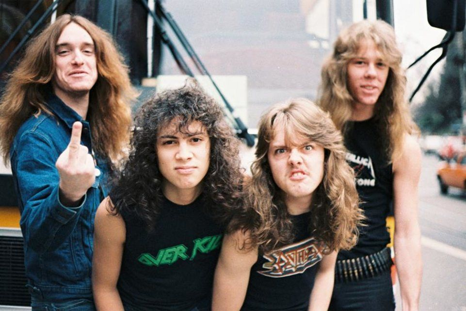
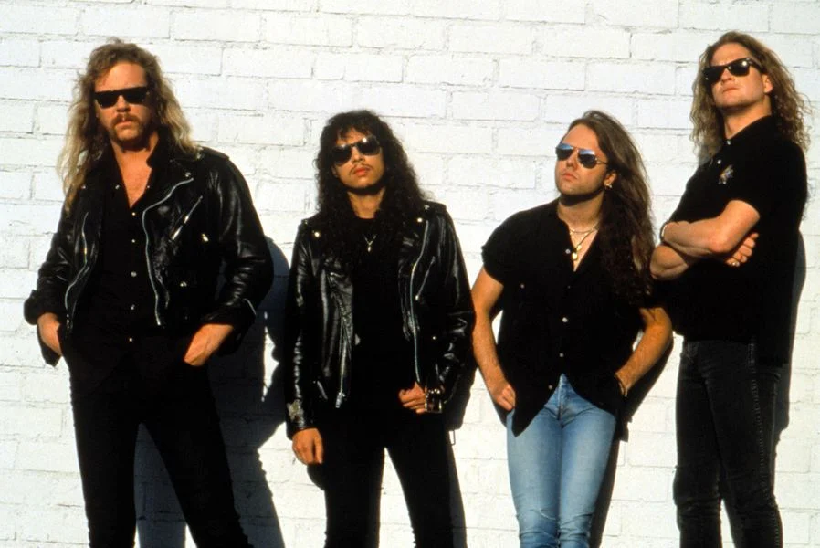
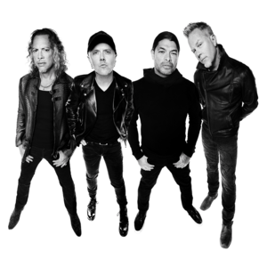

Historia
1981 - Nacimiento y primeros albumes
En 1981 Lars Ulrich y James Hetfield forman Metallica en Los Angeles. Inspirados por la ola de bandas británicas de Heavy Metal. El sonido de Metallica es una respuesta directa a diferentes grupos de la época algo suaves y con tendencia a figurar en listados. En 1983 Metallica escoge a Nueva York como su centro de operaciones. Su primer trabajo Kill 'em All es lanzado por el sello independiente Megaforce. Este disco supera las trescientos mil copias de venta y significa la primera gira internacional del grupo. En 1984 aparece su ya segundo disco Ride The Lightning; Elektra se encarga de la distribución. En 1985 Master Of Puppets, tercer disco, es grabado en Copenhage. El álbum vende un millón de copias, solo en los Estados Unidos. El grupo acompaña a Ozzy Osbourne en un recorrido por los Estados Unidos.
1986 - Muerte de Cliff Burtos
Es 1986 y la banda está en su primer tour por Gran Bretaña y Europa. En la noche del 27 de septiembre, el bus que transporta al grupo se sale de una carretera sueca. El bajista Cliff Burton pierde la vida. Para reemplazarlo los restantes miembros de la banda eligen a Jason Newsted como nuevo bajista. En 1987, en enero la banda regresa a Europa a finalizar la parte de la gira que se vió afectada por el accidente. Cansados de viajar y ofrecer conciertos por casi un año, el grupo decide tomarse un merecido descanso en California. Mientras escriben temas para el próximo disco, James Hetfield, guitarrista y cantante de la agrupación sufre un accidente. Andand en monopatín cae a una piscina... vacía. Como consecuencia del accidente, James se parte el brazo y tarda tres meses en recuperarse. Durante este periodo, la casa de Lars se convierte en salón de ensayos. De esta experiencia surge un trabajo llamado Garage Days Re' Revisited. El disco contiene versiones de clásicos underground del metal.
1991 - Exito Mundial
Después de unos años de descanso, y varias giras mundiales, en Agosto de 1991 sale a la venta Metallica, conocido también por el nombre de Black, con el que consiguen ser número 1 en Estados Unidos y Europa, realizando una gira por todo el mundo en la que demuestran que son uno de los mejores directos del panorama musical, según palabras de Kirk Hammett: "Nosotros somos pura energía en el escenario, desprendemos poder al público y ellos son capaces de recogerlo, esa es la diferencia".
